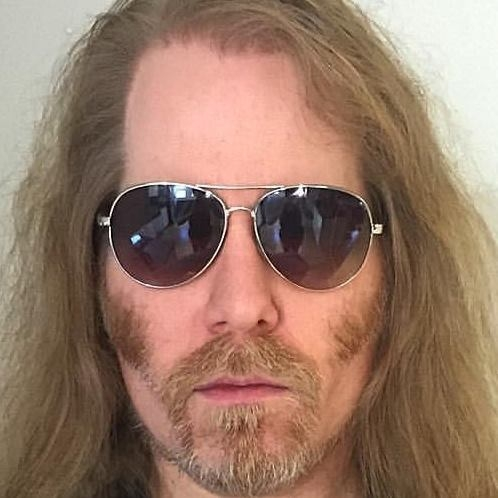
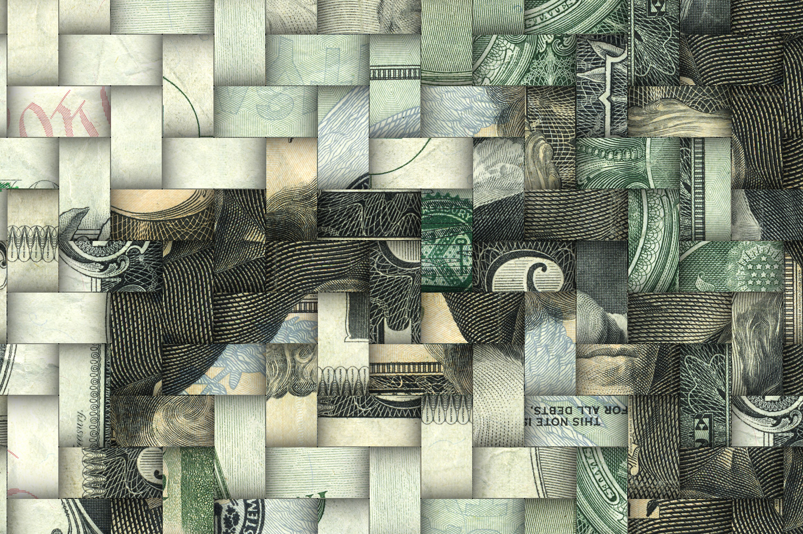

出生在内心的怪兽 | Eric Millikin
欢迎来到木牙Make Unique Young Arts，让我们一起来探索概念型激进主义！
当现实生活中无法实现的事物不断出现堆积，AI/VR/AR被作为创造者的我们开发了出来。那些生活中无法实现的梦想和奇思妙想才有了新的出口。艺术的发展也因为AI/VR/AR的出现变的更加的新颖。例如，工业设计，建筑设计，服装（商业、设计），游戏，沉浸式表演... 等。
AI/VR/AR has been developed by us as creators as things that can't be achieved in real life continue to pile up. A new outlet for dreams and ideas that life has never been able to achieve. The development of art is also more novel due to the appearance of AI/VR/AR. For example, industrial design, architectural design, clothing (commercial, design), games, immersive performances... And so on.
AI/VR/AR技术的出现让观众有了更多和艺术互动的可能，增加了许多感官享受。也让更多的人愿意了解艺术。对于艺术家而言也让作品得到了更多被了解的机会。今天我们非常幸运的邀请到概念新媒体艺术家Eric Millikin来到木牙MUYA。和大家一起倾听他对于AI/VR/AR在他的作品中起到的作用，他又如何应用的？对于想要入门的我们又能做些什么。
The appearance of AI/VR/AR technology makes it possible for the audience to interact with art more, and increases many sensory enjoyment. It also makes more people willing to learn about art. For artists, it also gives them more opportunities to be known about their works. Today we are very lucky to have concept new media artist Eric Millikin in MUYA. Let's listen to his role of AI/VR/AR in his works, and how does he apply it? What can we do for those who want to get started?

Eric Millikin
概念激进主义新媒体艺术家在底特律，密歇根州和里士满，弗吉尼亚州。Millikin 出生在一个工人阶级家庭，在密歇根乡下的一所移动房屋中长大，父亲是下岗的汽车工人，母亲是Denny’s餐厅的女服务员。
他作品中的激进主义主题经常试图改变他在工业发达的中西部地区和前南部邦联首府看到的偏见、恐惧和剥削。Millikin 是密歇根州立大学的第一代大学生，曾获得多项学术奖学金，包括国家优秀学生奖学金，目前他是弗吉尼亚联邦大学动态影像专业研究生在读学生。
Millikin 来自一个偏远的农村地区，现在的策略是接触尽可能广泛的受众，以最大限度地影响社会变化。他最近在一年的时间里在20个场馆展出，他的作品在底特律、丹佛、迪拜、旧金山、苏格兰和韩国的博物馆和画廊展出。Millikin之前的工作为他带来了广泛的经验，包括作为人体解剖实验室技术员，戏剧音响和灯光设计师，工业音乐家，普利策奖获奖艺术家和艺术总监， 萨勒姆女巫审判受害者的后裔。他的作品被《连线》、《今日美国》、《雷普利的信不信由你》等杂志登载。以及《纽约时报》周日艺术版块。
Eric Millikin
conceptual activist new media artist based in Detroit, Michigan, and Richmond, Virginia. Millikin comes from a working-class family, growing up in a mobile home in rural Michigan, the son of a laid-off auto worker and a Denny’s waitress.
The activist themes of his work often seek to change the types of prejudice, fear, and exploitation he has seen in the industrial Midwest and the former capital of the Confederacy. Millikin is a first-generation college student who attended Michigan State University with multiple academic scholarships, including a National Merit Scholarship, and he is currently an MFA candidate at Virginia Commonwealth University's renowned Kinetic Imaging program.
Coming out of an isolated rural area, Millikin's strategy is now to reach as wide an audience as possible in order to affect maximum social change. He has recently exhibited in 20 venues within a year’s time, and his work has been exhibited in museums and galleries from Detroit, Denver, and Dubai to San Francisco, Scotland, and South Korea. Millikin brings a wide range of experiences to his work, including as a human anatomy lab technician, theatrical sound and lighting designer, industrial musician, Pulitzer Prize-winning artist and art director, and descendant of Salem Witch Trial victims. His artwork has been featured by WIRED, USA TODAY, Ripley's Believe It or Not!, and The New York Times Sunday Arts section.


“我是一个激进主义概念新媒体艺术家,利用人工智能技术,互动视频投影,增强现实（专有术语）和虚拟现实,植物组织培养与克隆, 3D印刷、声音艺术、现代神秘主义艺术学中的神秘学实验和黑色幽默来解释我的研究主题，例如：警察暴力,经济不平等,物种灭绝,全球COVID-19大流行。”
✤ 科普：现代神秘主义艺术学 -Modernism and Magic: Experiments with Spiritualism, Theosophy and the Occult
现代主义和魔术：艺术学，精神主义，神学和神秘学的艺术实验与研究
“I am a conceptual activist new media artist, using techniques like artificial intelligence, interactive video projection, augmented and virtual reality, vegetative tissue culture cloning, 3D printing, sound art, occult experiments, and dark humor to address my research into topics like police brutality, economic injustice, species extinction, and the global COVID-19 pandemic.”

“我同时研究多个相关的系列，利用实验性的新媒体，寻找最好的方式来传达我的想法，并接触到最广泛的受众。我使用流行和概念策略来创作既平易近人又拥有智慧的艺术作品。我经常探索艺术、科学和神秘学之间的交集，正如人类学家Claude Levi-Strauss所描述的那样:“艺术介于科学知识和神秘或神奇的思想之间，” 科幻作家Arthur C. Clarke形容“任何足够先进的技术都如同魔法般”，艺术家村上隆(Takashi Murakami)则形容“艺术家就是死灵法师”。"
“I work in multiple interrelated series, using experimental new media to find the best ways to communicate my ideas and reach the widest audiences. I use both pop and conceptual strategies to create artwork that is both accessible as well as intellectual. I often explore the intersections of art, science, and the occult, what anthropologist Claude Levi-Strauss describes as how ’'Art lies half-way between scientific knowledge and mythical or magical thought,” science fiction writer Arthur C. Clarke describes as how “Any sufficiently advanced technology is indistinguishable from magic,” and artist Takashi Murakami describes as how “An artist is a necromancer.”


➤ 木牙MUYA: 艺术与社会密不可分。您是如何如用一种聪明的方式将艺术创作联系社会话题？
Arts and society always bond together.How to combine artwork with social issues in a smart way?
Eric Millikin: 对我来说，所有的艺术作品都代表着社会和政治问题。通常被视为“非政治”的艺术作品通常只是支持当前主流社会制度的艺术作品，所以它的观点可能会被那些习惯接触它们的人所忽视。在美国很多人都习惯于驾驶汽车和吃肉,他们不认为汽车广告和快餐汉堡包餐馆是政治行为的一种,但一旦有人说“开车少”或者“多吃蔬菜”这些意想不到的消息就会被认为是有政治倾向的信息。
所以，对我来说，做社会激进主义艺术作品的聪明方法是认识到所有的艺术作品都是社会系统的一部分，如果我不是在试图解决问题，那么我可能会在这一过程中贡献一份力量。一旦你决定做社会激进主义艺术作品, 我认为围绕着“通过任何必要的手段”是一个很聪明的做法, 意思是你可以创作微妙,晦涩的激进主义艺术, 或者你也可以明目张胆的创作过分激进的艺术作品，再或者你也可以做漂亮，丑陋，愤怒，悲伤或者幽默的作品。所以，无论是新的，原创的，有趣的，积极的艺术作品，所有的艺术作品都需要竭尽所能的去尝试。
To me, all artwork represents social and political issues. Artwork that is usually seen as “not political” is usually just artwork that is supporting the current, dominant social system, so its politics maybe go unnoticed by people who are so used to being exposed to them. A lot of people in the U.S. are so used to driving cars and eating meat that they don’t think of car commercials and fast food hamburger restaurants as political acts, but as soon as anyone says “maybe drive your car less” or “maybe eat a vegetable” then those unexpected messages are considered “political.”
So, to me, the smart way to do social activist artwork is to recognize that all artwork is part of the social system, and that if I’m not trying to solve solution problems then I am probably contributing to them. And then once you’ve decided to make social activist artwork, I think it’s smart to embrace the idea of “by any means necessary,” meaning you can make subtle, obscure activist art, or you can make blatant, outrageous activist art, or you can make pretty artwork, or ugly artwork, or angry artwork, or sad artwork, or humorous artwork. So, yeah, new, original, interesting, activist artwork by any means necessary.
➤ 木牙MUYA: 疫情的发生促进了网络艺术的发展。你能谈谈你的新作品“Vironomicon”的想法吗?除了新的冠状病毒，我们还能从这本书中看到什么有趣的东西?你对这次爆发有什么看法?
The occurrence of this epidemic has promoted the development of online art. Can you talk about the idea of your new work, "Vironomicon"? In addition to the new coronavirus, what interesting things can we see from this book? What do you think of this outbreak?
Eric Millikin: COVID-19的爆发确实显示了美国社会和文化的很多失败，我在我的作品中提到过，包括在“Vironomicon”中。“我们清楚地看到，美国有一部分人迷信超过相信科学，他们的信仰不仅会导致自己的死亡，还会不断的导致很多人的死亡。”在我的许多作品中，包括《Vironomicon》，我将预测性人工智能与中世纪文艺复兴时期的神秘算命结合起来，对他们共同的历史进行探索。
有一种奇怪的现象是“神秘学者”会预测鼠疫或死亡并且从未出过差错。但是为什么现在疾病爆发了，我们的总统却完全没有准备，在最初爆发的几个月过后，他仍然不知道发生了什么。因此迫使我们尝试着独立的去处理和面对这个问题，所以我以我的视角（一个艺术家的视角）创作了“Vironomicon”这本书-（艺术家的书）来解释当下发生的一切。这样一来，虽然每个人都隔离在家，但是也可以看到一些新的，与众不同的调查然后支撑下去。
This COVID-19 outbreak has really shown a lot of the failures of US society and culture that I address in my artwork, including in “Vironomicon.” One thing we are seeing clearly is the segment of the US that believes in superstition over science, and how their beliefs can lead to the deaths of not just themselves but also so many others. I also use predictive artificial intelligence combined with Medieval and Renaissance occult fortune telling in a lot of my work, including in “Vironomicon,” as an exploration of their shared histories.
There’s this strange phenomena where occultists know that you can’t go wrong predicting plague or death, but now there’s a disease outbreak and the President is totally unprepared and now months after the initial outbreak he still can’t figure out what’s going on. And so that leaves us to be the ones to try to individually make sense of this, so I made “Vironomicon” as my version of making sense of everything, and then created it as an artist’s book so everyone can stay home in isolation but have something new and unusual to look into and hang on to.
➤ 木牙MUYA: 在您的艺术品中，有许多怪物的元素。这仅仅是您的艺术风格，还是您认为怪物是人类的缩影？
In your artworks, there are many elements of monsters. Does this is only your art style, or do you think the character of a monster is a miniature of a human being?
Eric Millikin: 是的，我的作品通常和历史民间传说中的怪物以及现代流行文化中的怪物相关。对我来说，人类创造怪物故事的方式会告诉我们很多，在我们的文化中有什么类型的恐惧，以及我们的文化如何试图利用恐惧来控制我们。就像现在,这部分是为什么我创建了“Vironomicon”这种恐怖的作品。我们有美国政府应对流感大流行,这是一个巨大的失败,但为了转移民众的注意力,美国总统正试图利用种族歧视，亚裔恐惧，来来唤醒人内心深处的怪兽,来掩饰自己的无能。
Yeah, I often work with monsters from historical folklore as well as present day pop culture. For me, the way humans create stories of others as monsters will tell us a lot about what types of fears our culture have and how our cultures try to use fear to control us. Like right now, and this part of why I created “Vironomicon” as this sort of horror artifact, we’ve got a US government response to the pandemic that has been a monstrous failure, but in order to deflect that, the president of the United States is trying to use racist anti-Asian fear to try to promote thinking of large groups of people as monsters, to hide his own monstrous incompetence.
➤ 木牙MUYA: 我真的很喜欢您的动态影像和互动装置。我想知道您为什么对艺术互动会如此感兴趣？
I’m really into your motion video and interactive installations. I wonder why you feel a strong interest in driving interaction into your artworks?
Eric Millikin: 在我的很多作品中，我试图让人们摆脱被动的观察者的这一设定，不然他们可能只看了几分钟就会离开了。我想创作出人们在体验过后很久还是会不断谈论的艺术作品，并且可能对一些人后来的行为有影响，也可以是作为某种方式去支持某些人。所以对我来说，交互作品就是（在一个场景里）人们可以触摸，移动，穿戴，看到或听到的一些东西对他们自己的行为做出反应，这就强化了我们应该不再是我们世界的被动旁观者，我们都应该更加积极地重塑我们的世界。
With a lot of my work, I’m trying to get people away from being passive observers, who maybe look at something for a few minutes and then move on. I want to create artwork that people talk about long after experiencing it, and that maybe helps someone take a later action, to stand up for something in some way. So to me, interactive work where someone can touch something, move something, wear something, and see or hear something react to their own actions, then that reinforces the idea that we should all be less passive spectators of our world, and all be more active in reshaping our world.
➤ 木牙MUYA:VR和新媒体艺术在当下非常流行。VR和新媒体艺术的出现完善了艺术的哪一部分？
VR and New Media art are very popular nowadays. The emergence of VR and New Media art perfected which part of art?
Eric Millikin:我最喜欢VR的一点是，我可以创造出我视野之外的东西。即使是沉浸式的实体画廊展览,通常在入口处,你可以看到一切,没有什么是能被隐藏的,但VR总是可以让一些发生在你的视线的边缘,甚至完全在你的视线之外。这种方法是非常奏效的，例如当我在处理作品中恐惧的元素时，你的视线边缘可能会发生一些你不确定的事情，或者当我在处理我作品中人体的肢体动作时，我会创造一些物体可以围绕并且跟踪他们。当然，也有能力与地球另一端的人即时分享这种大规模的沉浸式体验，而不需要把装置邮寄到博物馆。它接近于能够有一个纯粹的想法，一个梦想，并邀请任何一个人进入它（这个展示空间）。
One of the things I like most about working in VR is that I can create things that I know will be out of the field of view. Usually, with even the most immersive physical gallery installations, there’s usually a point right at the entrance where you can see everything and nothing is hidden from view, but with VR there can always be something happening just on the edges of your view or even completely out of view behind you.
That can be really effective when I’m working with fear, where there’s something you’re not sure of just at the edge of vour view, or when I’m working with people’s movements, I can give them something to follow around. And of course the ability to rather instantly share that sort of large-scale immersive experience with someone on the other side of the planet, without having to ship an installation to a museum. It’s close to being able to have a pure thought, a dream, and invite someone into it.
➤ 木牙MUYA: 如今，VR / AI / AR仍在开发和探索中。您如何在艺术研究和艺术实践中更好地使用或应用它们？
In nowadays, VR / AI / AR is still in development and exploration. How can you use or apply them well in your art research and art practices?
Eric Millikin:对我来说，正是因为VR / AI / AR在不断的发展，这成为了我工作中最有趣的一部分。对比起传统的媒体,有很多已经相当的完善了, 而且这些媒体限制了使用者的思想和固定模式,但实际上对于新媒体艺术家更需要的应该是不断的探索和实验,并且能够承担一定的风险和挑战。
To me that’s part of what makes them most interesting to work with. With older media, there’s so much that’s already been done, and often some audiences have a limited idea of what should be done in those media, but with new media by its very nature artists are more driven to be exploratory and experimental, and able to take some risks and make something provocative.
➤ 木牙MUYA: 能给开始使用VR / AI / AR的人们或学生一些建议或技巧吗？他们可以从哪里开始？您认为他们应该更关注哪一部分？
Could you give some recommendations or tips to the people or students who start work with VR / AI / AR? Where can they begin? Which part do you think they can pay more attention to?
Eric Millikin:对于想要接触任何类型新媒体的人，我的主要建议很简单:开始吧! 记住，你的第一个作品可能是你最糟糕的作品。所以开始吧！做点什么，然后继续做更新更好的东西。我发现很多艺术家并不愿在新媒体工作,因为他们已经创建了一个舒适的传统媒体工作氛围和阶层,而且他们害怕会扔掉他们之前所学到的技能和思想并且一切得从0开始,但这并不全是真的。比如，如果有人是一名肖像画家，他想要开始在VR领域工作，他们仍然可以结合人物和面部表情在他新的作品中，他现在可以探索其他事物/领域，比如以一种他无法在有限维度的平面上探索的方式重新探索虚拟空间。
我认为新媒体对于艺术家是一个可以开始创作的好地方，新颖并且不同于其他的媒体，或者新媒体也是在工作中经常被关注的。也就是说，要记住:这个新媒体让人们真正感兴趣的到底是什么，是什么让人们想要使用它?对我来说，作为一个对政府是如何通过谎言来传播恐惧感兴趣的艺术家，我对“虚拟”和“人工”都非常感兴趣，所以虚拟现实和人工智能给了我很大的探索空间。但对其他艺术家来说，这些新媒体都有巨大的未开发的潜力，艺术家可以深入其中，发展新的方向。因为，未来总会有当下无法想象的新鲜事物值得我们去探索。
My main recommendation for everyone looking to get into any type of new media is simple: Jump into it! Remember, your first project will probably be your worst project, so get started, make something, then keep making newer and better things. I find a lot of artists are maybe hesitant to work in new media because maybe they’ve built up a comfort level working in more traditional media, and they’re afraid they’ll be throwing away all the skills and ideas they’ve learned and be starting over from zero, but that’s not true at all. Like, if someone’s a portrait painter, and they want to start working in VR, they can still work with human figures and facial expressions, they’re just now able to explore other things, like maybe virtual space in a way they can’t explore on a flat surface with limited dimensions.
And I think that the idea of what is new and different about new media is something that can be a good place for an artist to begin, or a key thing to pay attention to while working. That is, keeping in mind: What is it about this new media that really interests them, what makes them want to use it?
For me, as an artist who is interested in how governments spread fear through lies and propaganda, I’m very interested in the “virtual” and the “artificial” so virtual reality and artificial intelligence give me a lot of room to explore. But for any other artist, these new media have vast unexplored potential for artists to dive into and take in new directions. And there will always be something new to explore tomorrow that we can’t even imagine today.


木牙微信订阅号